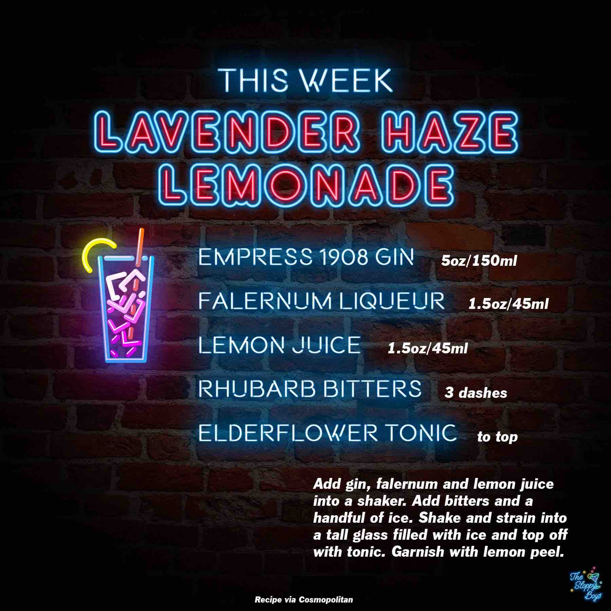

Lavender Haze Lemonade
Ingredients
- Empress 1908 Gin (1.5oz/45ml)
- Falernum Liqueur (1.5oz/45ml)
- Lemon Juice (1.5oz/45ml)
- Rhubarb Bitters (3 dashes)
- Elderflower Tonic (to top)
Steps
- Add gin, falernum and lemon juice into a shaker.
- Add bitters and a handful of ice.
- Shake and strain into a tall glass filled with ice and top off with tonic.
- Garnish with lemon peel.
Notes